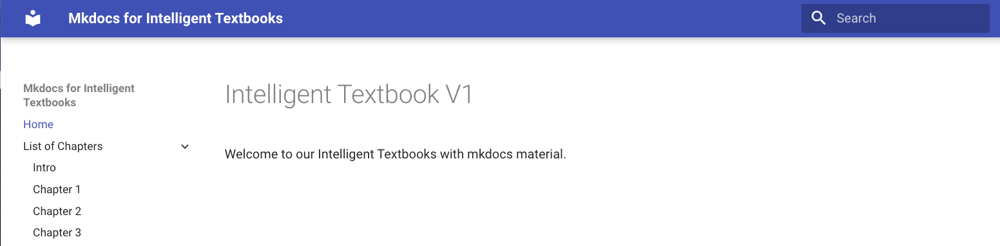

Getting Started Building a Intelligent Textbook with mkdocs-material
Prerequisites
This getting started guide assumes you have Python installed on your local system and you have the permissions to install conda and pip.
You can test this by typing the python --version command into your terminal:
$ python --version
Python 3.13.0
If this does not work, we suggest using ChatGPT with the prompt: "How do I install Python on my Windows 11 PC?" or similar.
Sample Book Structure
In this getting started section we will have the following pages of our book:
- home page
- list of chapters
- chapter 1
- chapter 2
- chapter 3
We will build a simple website with page navigation and search (turned on by default in mkdocs).
File structure
Here are the paths to these documents relative to the base of your GitHub repository
```linenums="0" docs/index.md docs/chapters/index.md docs/chapters/chapter-1.md docs/chapters/chapter-2.md docs/chapters/chapter-3.md mkdocs.yml
You can find all of these files on a sample test GitHub repository here:
[https://github.com/dmccreary/i-book-v1](https://github.com/dmccreary/i-book-v1)
## Structure of the mkdocs.yml file
```yml
site_name: Mkdocs for Intelligent Textbooks
repo_url: 'https://github.com/YOUR_GITHUB_ID/i-book-v1'
nav:
- Home: index.md
- List of Chapters:
- Intro: chapters/index.md
- Chapter 1: chapters/chapter-1.md
- Chapter 2: chapters/chapter-2.md
- Chapter 3: chapters/chapter-3.md
theme:
name: material
!!! Note In the above, make sure you change YOUR_GITHUB_ID to your actual GitHub account id.
When we finish this lesson, this will will render the following site:

Creating a Local Build
We will use the conda system to create a virtual private environment for building our site. This environment will make sure the versions of libraries we need for our site will not conflict with your other Python projects.
Step 1: Install Conda
Follow the instructions for your computer on the anaconda website for downloading miniconda.
https://docs.anaconda.com/miniconda/install/
Make sure you $PATH variable has conda on it. If not, you can setup an alias or
use the whereis program to find the full path:
$ whereis conda
conda: /Users/dan/miniconda3/condabin/conda
To test that it is installed run conda with the --version option:
$ conda --version
conda 24.9.2
Step 2: Create a Python 3 Virtual Environment for mkdocs
conda deactivate
conda create -n mkdocs python=3
conda activate mkdocs
Your prompt should now indicate that you are in the mkdocs environment:
(mkdocs) $
Step 3: Install mkdocs and the mkdocs-material Libraries with pip
We will use the Python pip command to install the right libraries:
(mkdocs) $ pip install mkdocs mkdocs-material
This command will intall the latest version of the mkdocs and mkdocs-material libraries. Alternatively, you can leverage our requirements.txt file and run the following command:
pip install -r requirements.txt
This will make sure you get at least the minimal versions of these libraries that we tested our site with.
Next, test that the mkdocs command is working:
(mkdocs) $ mkdocs --version
mkdocs, version 1.6.1 from /Users/YOUR_LOCAL_NAME/miniconda3/envs/mkdocs/lib/python3.13/site-packages/mkdocs (Python 3.13)
Where YOUR_LOCAL_NAME is the name of your local account on your local filesystem.
Step 4: Run the mkdocs build command
The command mkdocs build will read all your markdown files and convert them
into HTML. It will place all the HTML files in a directory called site. You
want to make sure not to check this into your GitHub main branch. You can
do this by adding site to the .gitignore file. Here is an example:
```linenums="0" site .DS_Store ~$*
```sh
(mkdocs) $ mkdocs build
INFO - Cleaning site directory
INFO - Building documentation to directory:
/Users/YOUR_LOCAL_NAME/Documents/ws/i-book-v1/site
INFO - Documentation built in 0.15 seconds
Step 5: Run a Local Server
This command will start a local web server and put your website on it. It will also monitor if any of the files in the docs directory change of if your mkdocs.yml file changes. If they do change, it will regenerate the required files.
(mkdocs) $ mkdocs serve
INFO - Building documentation...
INFO - Cleaning site directory
INFO - Documentation built in 0.12 seconds
INFO - [14:52:39] Watching paths for changes: 'docs', 'mkdocs.yml'
INFO - [14:52:39] Serving on http://127.0.0.1:8000/
Now navigate to your localhost port 8000:
You should see the first version of the book.
Step 6: Do a Deploy to GitHub Pages
Once you preview your website on your local computer you are ready to publish your new creation for the world to see! We do this with the following command:
(mkdocs) $ mkdocs gh-deploy
linenums="0"
INFO - Cleaning site directory
INFO - Building documentation to directory:
/Users/YOUR_LOCAL_NAME/Documents/ws/i-book-v1/site
INFO - Documentation built in 0.13 seconds
WARNING - Version check skipped: No version specified in previous deployment.
INFO - Copying '/Users/YOUR_LOCAL_NAME/Documents/ws/i-book-v1/site' to 'gh-pages' branch
and pushing to GitHub.
Enumerating objects: 67, done.
Counting objects: 100% (67/67), done.
Delta compression using up to 10 threads
Compressing objects: 100% (60/60), done.
Writing objects: 100% (67/67), 577.48 KiB | 6.56 MiB/s, done.
Total 67 (delta 8), reused 0 (delta 0), pack-reused 0
remote: Resolving deltas: 100% (8/8), done.
remote:
remote: Create a pull request for 'gh-pages' on GitHub by visiting:
remote: https://github.com/YOUR_GITHUB_ID/i-book-v1/pull/new/gh-pages
remote:
To https://github.com/YOUR_GITHUB_ID/i-book-v1.git
* [new branch] gh-pages -> gh-pages
INFO - Your documentation should shortly be available at:
https://YOUR_GITHUB_ID.github.io/i-book-v1/
Where YOUR_GITHUB_ID is your GitHub account ID. Note that you can copy this last line from the terminal and paste it into your browser URL.
Note that you can go to your GitHub repository and view the
gh-pages branch. All of your HTML pages will be there.
It is important that you don't check your site into your
main branch since this is a duplicate of the gh-pages branch.
As mentioned above, site should be in your .gitignore file.
Step 7: Test Your Site
You can now go to your site to test the deployment. The home will be
in the GitHub pages domain that ends with github.io. The format is like this:
https://YOUR_GITHUB_ID.github.io/i-book-v1/
You can also view the template used in this tutorial here:
https://dmccreary.github.io/i-book-v1/
Feel free to use the GitHub fork function to make your own copy of this GitHub repo. This will save you from having to create your own directory and file structures.
That is it! You have now published your first Intelligent Textbook. It does have search and navigation and we will now use generative AI tools to create fantastic content.